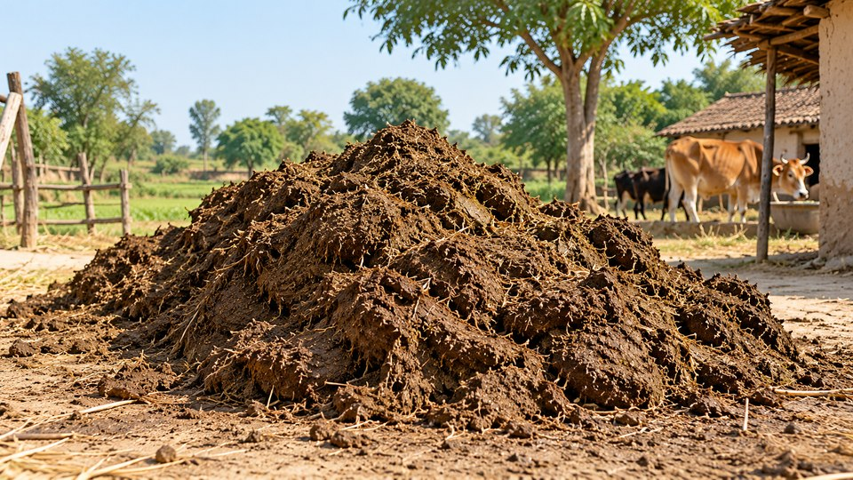
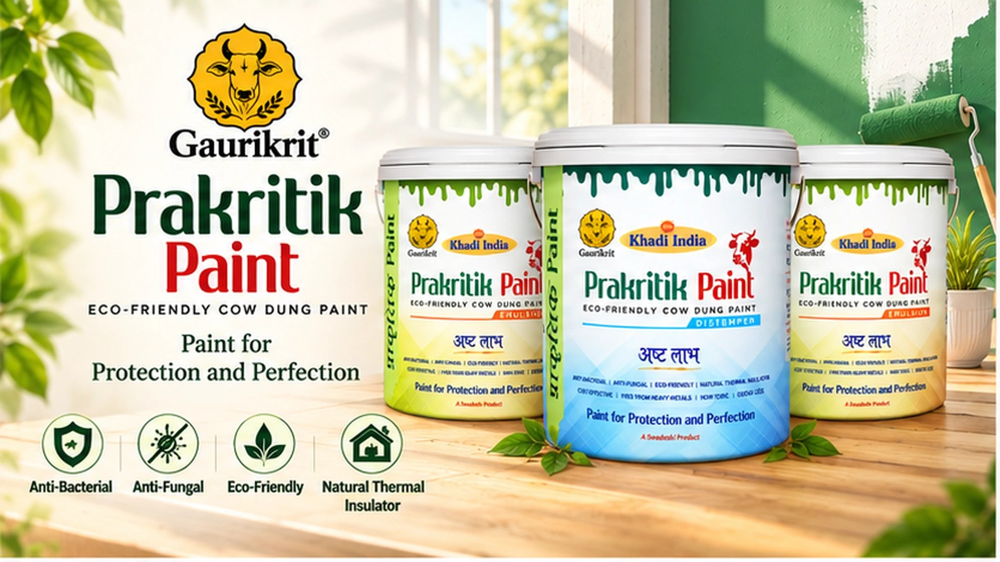
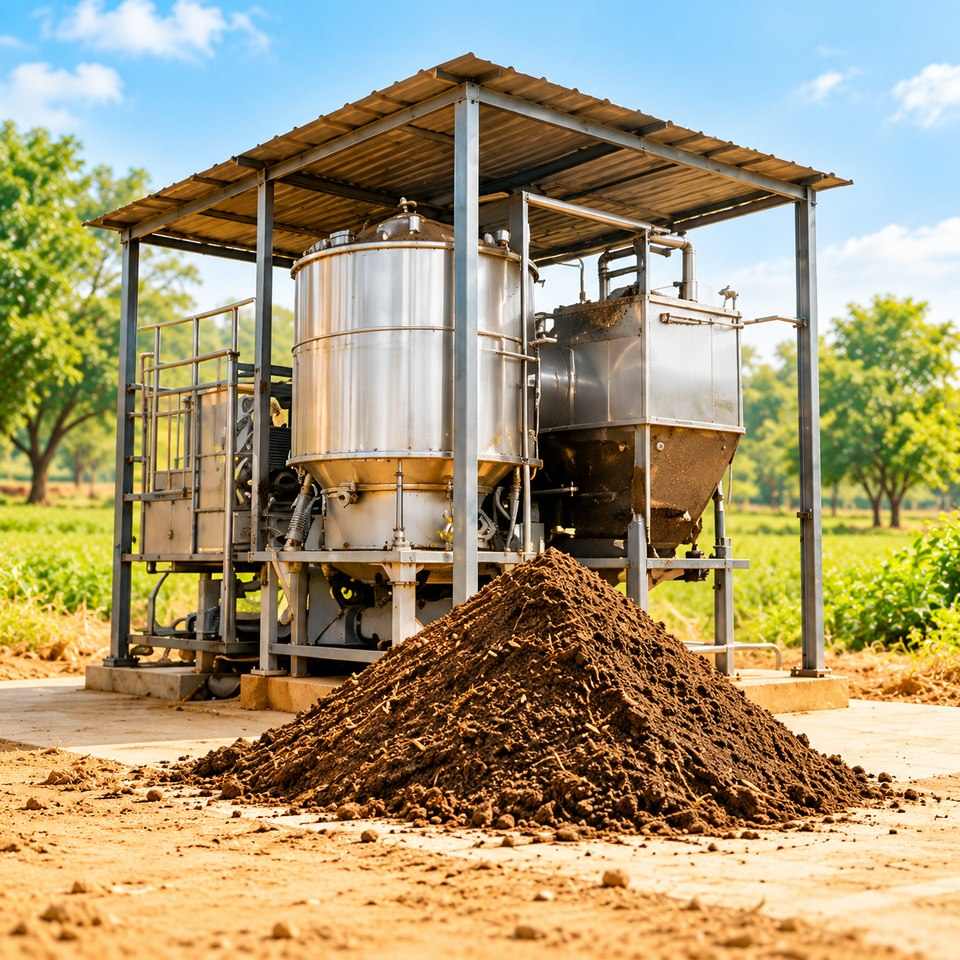
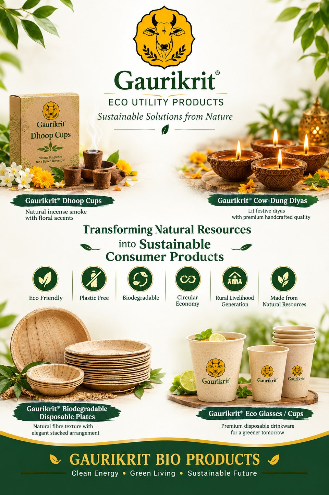
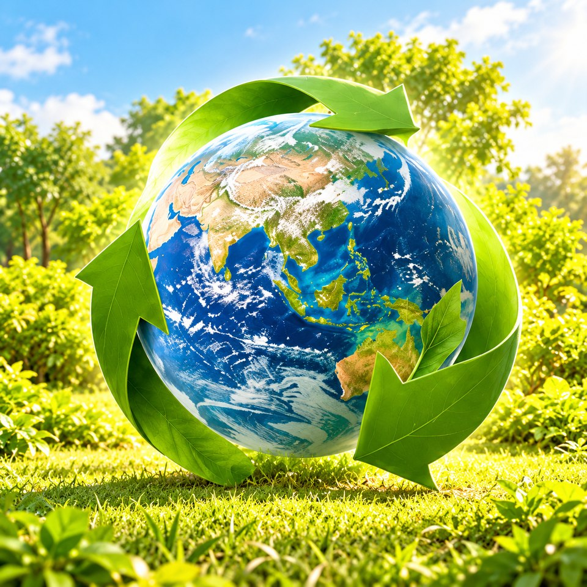

Stage 01
Cow Dung
A natural material long valued in traditional Indian homes — the shared starting point for every Gaurikrit direction.
Nature provides the resource. Gaurikrit explores how natural waste can be carried into practical material solutions—from Prakritik Paint to organic fuel and environmentally friendly utility products that help build a cleaner future.
Transforming Natural Resources. Redefining Sustainable Living.

Traditional India has long recognised cow dung as a useful material. Gaurikrit's direction is to carry that resource into practical contemporary applications — from naturally derived material to products for walls, energy and everyday use.
Transforming Cow Dung into Innovative Solutions for Sustainable Living.

A natural material long valued in traditional Indian homes — the shared starting point for every Gaurikrit direction.

The resource is studied, processed and developed into useful working materials — from coatings to fuel formats.

Four solutions from one resource: Eco-Paints, Cow-Dung Logs, Bio-Briquettes and Eco Utility Products.

Products that carry natural material back into everyday use — building a circular-economy direction for the future.
Cow dung is the shared material beginning. Gaurikrit develops it in four directions — Eco-Paints is the documented family; Cow-Dung Logs is a development direction; Bio-Briquettes and Eco Utility Products are Futureline product directions, not yet in production.
Every product we create contributes to a circular economy where waste becomes value and sustainability becomes practical.
Healthy walls inspired by nature.
Cow dung-based wall coatings in Distemper and Emulsion formats — the most developed family in the Gaurikrit ecosystem, documented with full product specifications.
Saving trees without changing traditions.
A dense log format developed as an alternative to conventional wood — directed at ceremonial and traditional applications where wood has long been the default.
Renewable energy from natural biomass.
Biomass-based fuel logs — a renewable energy direction that explores how natural material streams can reduce reliance on fossil fuels.
Sustainable products for everyday living.
Practical daily-use products from naturally derived materials — a plastic-reducing direction for homes, gardens and everyday routines.
The stages above repeat as one continuous cycle: the resource enters, is developed, becomes useful products — and further material opportunities keep the cycle going.
The one family with full product documentation — two formats, supplied specifications, real client photography and a shade catalogue.
To become a leading circular-economy company transforming natural and agricultural resources into sustainable products for homes, industries and communities.
To develop practical, accessible and environmentally responsible material solutions — and to evaluate every direction for its environmental responsibility.
Redefining Resources. Regenerating the Future.